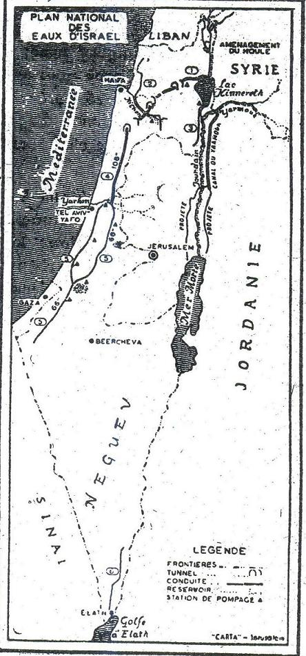

Chương XI

ấy nét chính của kinh tế Israël
Kinh tế là vận mạng của một quốc gia. Hoạt động nào cũng tuỳ thuộc kinh tế: “phú chi” và “giáo chi”. Chiến tranh thắng hay bại phần lớn nhờ kinh tế. Kinh tế có vững thì nội trị mới yên, ngoại giao mới mạnh.
Hoạt động kinh tế đã quan trọng nhất mà lại khó khăn nhất. Israël là nước mới thành lập, lại rất nhỏ, cho nên càng gặp nhiều nỗi khó khăn.
Thế giới ở trong một hoàn cảnh chính trị, mà sự phân công cho các quốc gia là điều không thể quan niệm nổi. Mười năm trước một vài chính khách Việt Nam bảo: nhân loại vẫn còn đói, vẫn còn thiếu thực phẩm, vậy thì tại sao mình không chuyên về canh nông mà lo phát triển kỹ nghệ làm gì làm sao có thể cạnh tranh về kỹ nghệ với Mỹ, Nhật, Đức, Pháp được? Tại sao ư? Nếu chuyên về canh nông thì nguy hiểm lắm. Nếu vì một lý do chính trị nào đó, khách hàng quan trọng nhất của mình không mua lúa cho mình nữa thì chết, lại rất có thể xảy ra một biến cố nào đó mà dân mình sẽ không có lấy một manh bố tời để che thân, như nông dân miền U Minh trong thế chiến vừa rồi. Cuba chuyên sản xuất đường mà chịu nhiều tủi nhục, bóc lột; vài nước ở Nam Mỹ chuyên trồng chuối mà có hồi lâm nguy về kinh tế. Cho nên trên thế giới hiện nay, nước nào cũng rán lo tự túc càng nhiều càng quí. Ngay những nước nhỏ một vài triệu dân cũng phải vậy, nếu còn muốn được tương đối tự do một chút, khỏi phải lệ thuộc về mọi phương diện.
Đó là tình trạng bi đát của các nước nhược tiểu như Việt Nam, Israel.
Vấn đề là làm sao sản xuất được tạm đủ mọi cái tối cần thiết, do đó phải có một nền kinh tế đa phương ( économie persifiée).
Riêng Israel, còn thêm một bó buộc nữa. Nước thì nhỏ mà ba phía là địch, muốn chống xâm lăng thì dọc các biên giới, ngay cả trong sa mạc Neguev nữa cũng phải có dân ở, phải có những làng xóm tự vệ được, để hoang chỗ nào là địch có thể lẻn vào chỗ đó. Mà muốn cho dân cư ở khắp nơi thì chỉ có cách là phát triển canh nông chỉ có canh nông mới thực sự lan rộng mà “chiếm” được mọi nơi; kỹ nghệ chỉ tập trung ở một địa điểm nhỏ hẹp thôi. Vì vậy dù là giữa sa mạc sự khai phá rất tốn kém mà chính quyền Israel cũng không thể bỏ hoang. Có khai phá thì mới lập làng xóm được và làng xóm sẽ xây cất đồn luỹ, đồn binh. Ở Israel canh nông là một phương tiện chống địch và bảo vệ quốc gia.
Đã bị bó buộc như trên, Israel còn gặp rất nhiều khó khăn nữa.
Diện tích chỉ có 20.700 cây số vuông, bằng ba tỉnh lớn ở Nam Việt Nam. Chiều dài được bốn trăm cây số mà chiều ngang có chỗ chỉ có 15 cây số, sự bảo vệ thật khó khăn. Chỉ một phần tư đất đai là trồng trọt mới có lợi; một nửa 10.000 cây số vuông là sa mạc, còn một phần tư nữa là rừng (ít có gỗ tốt) và những cỏ xấu.
Lại thêm nỗi thiếu nước, thành thử khó khai phá. Ba phần tư đất trồng trọt được luôn luôn thiếu nước Khoáng sản nghèo nàn: Hắc hải có một số khoảng chất, nhưng phí tổn để khai thác khá nặng.
Sa mạc có mỏ phốt phát; mỏ Timma sản xuất mỗi năm được vài ngàn tấn đồng, thiếu hẳn mỏ sắt, mỏ than. Dầu lửa chỉ đủ cung cấp từ 5 đến 10% nhu cầu của dân chúng. Điện lực rất kém, một phần vì không thoả thuận được với Jordanie để dùng những giòng nước, thác nước ở sông Jourdain, hồ Tibériade.
Tình hình xung đột của các quốc gia Ả Rập làm cho sự phát triển kinh tế của Israel chậm lại, bị hạn chế. Các quốc gia đó bao vây kinh tế Israel, cấm Israel dùng kinh Suez. Israel không mua được dầu lửa, thực phẩm, khoáng chất của họ, đương nhiên cũng không bán được gì cho họ. Hồi 1920, già nửa sản phẩm Palestine xuất cảng qua các nước chung quanh, hiện nay không còn được lấy vài phần trăm. Có hồi hãng xe hơi Renault của Pháp muốn lập một xưởng lắp xe ở Israel, sau phải bỏ vì sợ Ả Rập tẩy chay, và cũng sợ có chiến tranh thì xưởng bị tàn phá.
Nên kể thêm mốt khó khăn nữa trong mươi năm đầu: sự hồi hương của một triệu người Do Thái ở khắp nơi. Phải lo tiếp thu, định cư cho họ, dạy dỗ họ. Chính phủ Israel đã phải tiêu vào việc đó biết bao nhiêu tỷ bạc.
Nhưng Israel cũng được một số yếu tố thuận lợi.
- Trong chiến tranh người Ả Rập tản cư, để lại nhà cửa, đất đai (không có kỹ nghệ).
- Trước chiến tranh 1948, trong nhiều đợt hồi hương, một số Do Thái có học thức, có lý tưởng, có tinh thần hy sinh vô Palestine, phần nhân lực đó rất đáng kể. Israel lại nhận được nhiều sự giúp đỡ ở ngoài nữa: Mỹ đã viện trợ được 1,6 tỷ Mỹ kim, các tổ chức Do Thái thế giới tặng được 2 triệu Mỹ kim, Đức bồi thường chiến tranh nữa (không rõ bao nhiêu), ông Joseph Klalzmann trong sách đã dẫn, cho rằng trong mười năm từ 1952 tới 1962, trung bình mỗi người Do Thái được trợ cấp mỗi năm 100 Mỹ kim (khoảng 15.000đồng tiền VN hiện nay (1973). Dĩ nhiên là chính quyền Israel dùng số tiền đó vào các việc kiến thiết và cũng để mua khí giới chống với Ả Rập.
Hiện nay Đức không còn bồi thường chiến tranh nữa mà số tiền Mỹ viện trợ chắc cũng giảm đi nhiều.
Kết quả khả quan
Các kỹ nghệ điện, điện tử, hoá học, luyện kim, chuyên chở, đã tiến bộ rõ rệt. Số công nhân trong các xí nghiệp tăng từ 127.000 năm 1955 lên 215.000 năm 1964, nghĩa là từ 21,9% lên 25,3% tổng số người hoạt động trong nước.
Sức sản xuất từ 1948 đến 1958: về điện lực tăng lẻn gấp 4, về xi măng tăng lên từ 160.000 tấn tới 620.000 tấn; về thương thuyền từ 4 chiếc lên 34 chiếc, trọng tải tăng lên gần 70 lần.
Sức sản xuất tính theo đầu người, tăng 80% tử 1954 đến 1965.
Năm 1965, bán trong nước được 100.000 xe hơi.
Tổng số xuất cảng tăng rất mau:
Năm 1949: 4 triệu mỹ kim
Năm 1957: 222 triệu mỹ kim
Năm 1964: 649 triệu mỹ kim
Nhưng số nhập cảng cũng tăng theo, và số thiếu hụt vẫn quan trọng:
Năm 1950: hụt 228 triệu Mỹ kim
Năm 1964: hụt 528 triệu Mỹ kim
Vì mấy lần chiến tranh, phí tổn rất nặng, tiết kiệm được rất ít: từ 3 đến 4% lợi tức quốc gia, mà muốn mau phát triển thì cần phải tiết kiệm từ 8 đến 15% lợi tức quốc gia. Hiện nay giới trí thức và thợ thuyền chuyên môn đòi tăng lương, khả năng tiết kiệm để đầu tư càng kém, mà số vốn ngoại quốc đầu tư ở Israel cũng đã giảm từ 34,3% lợi tức trong nước năm 1952 xuống còn 24,2% năm 1964 (Những con số đó, rút trong báo Problème économiques số 24 – 11-66)
Sau chiến tranh 1967, tình hình kinh tế của Israel chắc không đẹp lắm: quân đội phải chiếm đóng những miền rộng, gấp hai đất đai Israel mà không khai thác gì được tại những miền đó cả vì dân chúng Ả Rập không hợp tác với họ.
Tuy nhiên, so với các dân tộc Ả Rập ở chung thì dân Israel có một mức sống cao hơn nhiều: lợi tức trung bình mỗi năm của mỗi người dân là 3.700 quan Pháp năm 1962 tức vài khoảng 60.000 đồng VN hiện nay (tiền Việt Nam Cộng hoà năm 1972). Theo André Piatier trong Encyclopedie Française Larousse thì năm 1953-54 lợi tức trung bình của Israel là 450 Mỹ kim, của Pháp là 700 Mỹ kim, của Thái Lan. Ấn Độ dưới 100 Mỹ kim.)
Con số đó chưa thế so sánh với số lợi tức trung bình ở các nước châu Âu được, nhưng có đặc điểm này là không có sự cách biệt lớn giữa lợi tức các cấp cao và các cấp thấp. Ít có người lương dưới 350 quan Pháp, mà cũng rất ít người lương cao trên 1.650 quan Pháp: trừ thuế đi thì sự cách biệt còn giảm hơn nữa. Nhân viên cấp cao ở Israel lãnh lương ít hơn nhân viên cùng cấp ở Pháp mà đóng thuế nặng hơn. Các kỹ sư Israel vì vậy đã đã đình công năm 1962 để đòi cải thiện đời sống.
Một đặc điểm nữa là đời sống nông dân tương đối dễ chịu. Hiện nay số người hoạt động phân phối theo ba hạng như sau:
20% vào nông nghiệp
30% vào kỹ nghệ
50% vào dịch vụ
{Tổng số người hoạt động)
So với các nước phát triển thì như vậy số người làm trong kỹ nghệ hơi kém (khoảng 40% mới vừa) mà số người làm các dịch vụ (nhà buôn, công tư chức đủ các ngành…) quá cao (khoảng 40% thì vừa).
Sự phát triển về canh nông
Trong mọi ngành kinh tế của Israel canh nông chiếm địa vị quan trọng nhất và đạt được những tiến bộ tốt đẹp nhất, đáng cho các quốc gia kém phát triển tìm hiểu để rút kinh nghiệm.
Ông Joseph Klatzmann trong sách đã dẫn bảo hoạt động canh nông của Israel thật lạ lùng, vì ba lẽ:
Thứ nhất: Israel có những hình thức kinh doanh về canh tác mà không nước nào có. Ngoài những hình thức kinh doanh thông thường như cá nhân, kinh doanh, sống cạnh nhau trong làng xóm (y như ở nước mình), như nông trại của quốc gia (nước ta chưa có, Nga có) còn những hình thức rất đặc biệt:
- Kibboutz, (nông trường cộng đồng) đa số gồm vài trăm người tự ý sống chung với nhau, cùng làm, cùng ăn, cùng hưởng quyền lợi như nhau, y như một đại gia đình, nhu cầu của mỗi người được cộng đồng chu cấp; hình thức đó là một thứ cộng sản tự do.
- Mochav ovedim (nông trường bán cộng đồng, bán cá nhân): đất cát là của chung, cộng đồng cho mỗi người mướn tự canh tác, nhưng bắt buộc mọi người phải hợp tác với nhau.
- Mochav chitoufi (nông trường hợp tác) mọi người khai thác chung đất đai chia lợi tức cho nhau và mọi người dùng lợi tức cách nào tuỳ ý.
Hình thức này ở giữa hai hình thức trên.
Vì những hình thức kinh doanh mới mẻ đó là những thì nghiệm rất phấn khởi của Israel, nên chúng tôi sẽ dành riêng chương sau để xét kỹ.
- Thứ nhì: những gắng sức của dân chúng và chính quyền Israel về canh tác đáng làm gương cho mọi xứ, gắng sức vè sự đào tạo cán bộ, về sự khai khẩn, vỡ đất hoang, về sự chống với nạn thiếu nước.
Thứ ba: kết quả làm cho mọi người phải ngạc nhiên, chỉ trong mười mấy năm kết quả của họ đã vượt Pháp, cả sa mạc Neguev, một nửa diện tích của Israel, một miền toàn động cát và đồi cát đã mơn mởn lúa xanh, đã “trổ bông như một giò huệ” (chữ trong Thánh kinh).
Dưới đây chúng tôi sẽ lần lượt xét những gắng sức và kết quả ấy.
Một dân tộc quyết tâm làm hồi sinh lại một miền đã chết từ mấy ngàn năm.
Gắng sức quan trọng nhất là đào tạo cán bộ, phổ biến phương pháp canh tác. Chính quyền Israel đã sáng suốt hiểu rằng vấn đề đó là vấn đề số1.
Thực ra, vấn đề đó đã được người Do Thái hiểu từ lâu, nhưng từ khi Israel độc lập, nó mới được đưa lên hàng đầu thành một quốc sách, theo ông Joseph Klatzmann, từ năm 1870, trường canh nông đầu tiên của Israel đã được thành lập ở Mikvé-Israel. Năm 1962 trường đào tạo 650 học sinh mà một phần ba là con nông dân. Học trong ba năm. Các học sinh giỏi nhất được học thêm một năm nữa, và sau năm thứ tư, đậu bằng Tú tài canh nông, có thể lên Đại học. Chương trình học rất nặng: mỗi ngày 6 giờ cua (cours) và 4 giờ làm lụng ở nông trại rộng 350 hecta trồng đủ các loại lúa, cây ăn trái, rau.
Ở trường ra, họ thành những cán bộ đi về các làng mới thành lập để phổ biến cách thức canh tác hoặc dạy môn canh nông trong các trường tiểu học (muốn được dạy, họ phải học thêm một năm về sư phạm).
Ông Joseph Klatzmann không cho biết thì vô lượng học sinh phải có trình độ ra sao, nhưng chúng ta có thể đoán rằng họ đã học hết ban tiểu học mà năm cuối cùng ban đó tương đương với lớp đệ ngũ của ta. Muốn hiểu sự quan trọng của trường đó, chúng ta nên nhớ xứ Israel năm 1962 chỉ có hơn hai triệu dân. Dân số của ta hiện nay 14 - 15 triệu, cứ theo tỷ số dân mà tính, muốn đuổi kịp họ, chúng là phải có một trường canh nông lớn gấp 6, gấp 7 trường Mikvé - Israel, nghĩa là gồm khoảng 4.000, 4.500 học sinh. Mà xin độc giả nhớ kỹ: Israel không phải chỉ có một trường canh nông đó, còn ba chục trường nữa, tổng cộng 5.500 học sinh (tương đương với 33.000 - 38.000 ở nước ta). Sự gắng sức của họ thật kinh khủng! Nhất thế giới!
Nhờ vậy mà tại những làng mới thành lập (nhất là trong thời Do Thái khắp nơi ùn ùn hồi hương) họ gởi tới rất nhiều huấn luyện viên canh nông, tính ra được một huấn luyện viên cho hai mươi gia đình nông dân.
Mỗi làng mới được thành lập theo ba giai đoạn như sau: Mới đầu các người hồi hương được trả công từng ngày để xây cất làng, trồng trọt. Khi chính quyền bắt đầu chia đất, họ chưa thể tự khai thác lấy, tự quản trị lấy được. Trong giai đoạn đó các huấn luyện viên hướng dẫn họ về mọi vấn đề: hành chính, mua bán thực phẩm dự trữ. Huấn luyện viên giữ nhiệm vụ thư ký của làng.
Chính phủ còn gởi tới làng một nữ cán bộ xã hội để chỉ cho phụ nữ những điều cần thiết về vệ sinh, về gia chánh. Nhiều người phương Đông mới hồi hương không biết rằng sữa cần thiết cho sức khoẻ của trẻ. Phải tập cho họ uống sữa. Lại phải có huấn luyện viên khuyến khích, chỉ cách cho họ nuôi bò, làm ruộng. Như vậy là mỗi làng từ 60 tới 80 gia đình nông dân có ít nhất là ba, bốn cán bộ sống thường trực với dân, chứ không phải lâu lâu mới ghé lt bữa, ít giờ rồi về quận như ở nước ta.
Những huấn luyện viên của họ làm gì cũng được, biết mọi kỹ thuật canh tác, biết công việc quản lý một nông trường. Nếu làng chuyên khai thác một ngành nào trồng trọt một giống cây nào thì chính phủ phái tới một chuyên viên nữa. Chuyên viên này phục vụ trong ba bốn làng, ở mỗi làng trong một thời gian rồi qua làng khác.
Giai đoạn đầu đó mất vài ba năm. Qua giai đoạn sau, dân làng bắt đầu tự trồng trọt quản lý được rồi. Huấn luyện viên lựa thanh niên trong làng, đào tạo họ để sau này họ thay thế mình, lúc này có thể không ở thường trực trong làng nữa. Làng đã tiến dần tới sự tự trị.
Qua giai đoạn thứ ba, làng chỉ thỉnh thoáng mới nhờ chính quyền làm cố vấn về kỹ thuật để theo dõi những cải cách tiến bộ mới mẻ nhất mà cải thiện phương pháp canh tác. Có làng muốn nâng cao trình độ văn hoá của dân, lập tủ sách, mua những sách kỹ thuật của phương Tây về nghiên cứu. Người ta nhận thấy rằng trình độ văn hoá của dân càng cao thì hiệu năng của họ càng tăng.
Điều lạ lùng nhất là Israel làm sao kiếm được nhiều huấn luyện viên như vậy. Xét nước ta, rất ít thanh niên lựa nghề canh nông, đại đa số vào các trường luật, trường văn khoa, y khoa, dược khoa. Mà những thanh niên theo ngành nông lâm tốt nghiệp rồi cũng chỉ thích làm ở phòng giấy tại tỉnh, chứ chẳng ai chịu về đồng ruộng sống với nông dân, làm lụng như nông dân.
Ngay Âu, Mỹ cũng thiếu huấn luyện viên canh nông. Một phần tại thiếu trường canh nông, nhưng một phần cũng tại các kỹ sư, cán bộ canh nông của họ không chịu sống ở đồng ruộng. Chính tại Nga cũng có cái tệ hại đó. Người ta khinh nghề tay lấm chân bùn và kẻ ở trường canh nông ra, làm ít năm rồi bỏ nghề, lái xe điện hoặc làm hãng buôn để được ở châu thành, đến nỗi chính quyền Nga các năm 1952-53 đã cương quyết đưa từ 150.000 đến 200.000 chuyên viên canh nông mọi cấp về làm các nông trường tập thể “kolkhoz”, “sovkhoz”.
Vậy thì nhờ đâu mà Israel nhiều huấn luyện viên canh nông tới mức đó? Chỉ nhờ tinh thần của họ, chứ không có gì khác. Chính quyền hết lòng khuyến khích họ, chỉ dẫn họ từng chút từ bước đầu cho đến bước cuối. Còn dân chúng thì hiểu rằng phát triển canh nông là yêu nước, là cứu quốc, làng mạc cỏ mọc đầy trên sa mạc và ở khắp biên giới thì mới giữ được nước. Nếu cứ ham tiền bám cảnh sung sướng mà dồn về các thị trấn, về Tel-Aviv, Haifa, bỏ hoang đồng ruộng, đồi núi thì nhất định sẽ mất nước. Hiểu vậy nên có nhiều ông già cũng xin vô học các trường canh nông, làm gương cho con cháu. Khi họ vô học, ruộng nương của họ mà thiếu người trông nom thì láng giềng họ trông nom giùm cho. Học xong rồi, họ trở về làng làm cho họ và truyền bá kỹ thuật, kiến thức cho bà con. Huấn luyện viên của họ không có tinh thần công chức, mà có tinh thần tiên khu, tinh thần cứu quốc.
Trong những hồi đầu, làn sóng hồi hương ồ ạt chính quyền Israel chưa tổ chức kịp và thiếu kinh nghiệm, gom những người Do Thái từ nhiều xứ khác nhau, phong tục, lối sống trái ngược nhau như dân Roumanie với dân Maroc, đưa về một miền để tạo một làng mới. Có lẽ nhà cầm quyền nghĩ rằng có sống chung với nhau người ta mới mau hiểu nhau mà quốc gia mới dễ thống nhất. Nhưng chẳng bao lâu họ thấy rằng chính sách đó không có kết quả: những dân đó khó sống chung với nhau lắm và rốt cuộc hoặc người Roumanie đi nơi khác, hoặc người Maroc đi nơi khác tìm người cùng xứ.
Nhà cầm quyền Israel phải tổ chức lại: lập những xóm làng nho nhỏ thôi mà dân cư gồm toàn những người cùng xứ, có khi cũng một giới nữa.
Còn một vấn đề nữa khó giải quyết: muốn tăng năng suất thì nên lập những làng nhỏ, mỗi người dân có một khoảnh đất riêng cày cấy lấy hay là nên lập những nông trường thật lớn tổ chức như một đại xí nghiệp mướn nhiều nhà chuyên môn? Cách sau có lợi về phương diện kinh tế, vì có thể khai thác một cách hợp quy tắc khoa học, dùng máy lớn, giảm chi phí, nhưng lại bất lợi về phương diện xã hội, quốc gia: những công nhân làm mướn đó không có tinh thần trách nhiệm, hợp tác, không quyến luyến với đất họ cầy, không gây được một cộng đồng. Từ năm 1963, hình như chính quyền Israel thiên về cách thứ nhất và mặc dầu các công trường lớn năng suất cao thật, người ta cũng tính cắt nó thành những khu nhỏ chia cho dân để họ tạo thành những cộng đồng tự trị. (Ta nên nhớ ở Israel 80% đất thuộc về quốc gia).
Cộng trình khai khẩn
Khi Palestine còn là thuộc địa của Thổ, rồi đất bảo hộ của Anh thì đất đai cằn cỗi đến nỗi chính người Ả Rập lại đó cũng thấy nản, chỉ cày cấy vừa đủ ăn, và bán nhiều miếng lớn cho Do Thái.
Đất Palestine cần cỗi thật. Về phương diện canh nông nó gồm bốn miền.(1) Ở chương I, phần I, chúng tôi chia làm ba miền là đứng về phương diện địa lý; miền Bắc ở chương đó gồm miền rừng núi (số 2) và thung lũng (số 3) ở đây.
1. Cánh đồng ven biển.
Sát bờ biển là những động cát, không trồng được gì; phía sau những động cát đó là đất tốt, mầu mỡ, trồng lúa, trái cây, rau được, thường thiếu nước. Miền này từ hồi nào tới giờ vẫn là miền phong phú nhất của Palestine nhưng rất hẹp; sau chiến tranh Độc lập, chính quyền càng gắng sức khai thác: những vườn cam, quít, chanh, bưởi ở Tel Aviv, Haifa là một nguồn lợi lớn của Israel.
2. Miền rừng núi có trồng nho, ô-liu, một vài thứ lúa, nhưng phải bứng đá đi và chống nạn nước mưa xối xuống làm cho đất lở và mất màu mỡ.
Chính quyền Israel đã tận lực khai phá: nghiên cứu từng khoảng xem lớp dưới có tốt không, có đáng công khai phá không, rồi dùng máy, dùng thuốc nổ bứng đá trên mặt đi, tới một lớp sâu đủ cho cây cối mọc được, sau cùng, dùng máy ủi san phẳng thành như một khoảng sân, xây tường thấp ở chung quanh để giữ nước mưa, lại, không cho xối xuống chân núi, tường không xây bằng xi-măng, chỉ chất đá lên thôi. Có lai lớp tường song song nhau, giữa hai lớp đó chất đá vụn đã bứng; các luống cầy đều theo những đường bình hành, không có dốc để giữ phân. Công việc thực tốn kém, khó nhọc và đưa diện tích khai thác tăng lên được 350.000 dounam (350 km2).
3. Liền thung lũng, đặc biệt là thung lũng Jourdain, miền này xưa gồm toàn đầm lầy, đất đen, tốt có nhiều phân lá cây mục do nước nữa xối từ trên cao xuống. Nhưng người Ả Rập bỏ hoang, vì khí hậu rất xấu, nóng quá, ẩm thấp quá, ở ít lâu là bị bệnh sốt rét. Chính quyền Israel phải tháo nước, lấp hồ rồi mới trồng trọt được. Công việc đó hoàn thành năm 1958 và làm cho diện tích khai thác tăng lên được 60.000 dounam (Mỗi dounam là 1000 thước vuông.- 350.ooo dounam bằng 350 cây số vuông). Hồ Houlla và đầm lầy Poleg nay đã thành cánh đồng trồng được đủ các giống lúa và cây ăn trái.
4. Nhưng cả ba miền trên chỉ chiếm non nửa diện tích của Israel, già nửa còn lại là sa mạc Neguev gần hoàn toàn bỏ hoang.
Hồi trước chỉ ở phía Tây, giáp Gaza, tức gần biển và ở phía Bắc, dưới chân những đồi Beercheva là nơi trồng trọt được, còn những miền núi, miền thung lũng Arava đều bỏ hoang. Hầu hết là những đồi cát di động hoài vì gió thổi. Khí hậu rất khô khan, càng về phía Nam càng ít mưa. Tại Beercheva, mỗi năm chỉ mưa 20 phân nước, xuống thấp chút nữa chỉ còn được 10 phân, rồi 5 phân. Tại Eilath ở cực Nam, mỗi năm chỉ mưa được 3,1 phân nước, không bằng một cơn mưa lớn lâu nửa giờ ở nước mình. Mà mỗi năm chỉ mưa có bốn tháng; từ tháng tư tới tháng mười nắng như nung. Nước mưa đổ xuống, 60% bốc lên thành hơi, 5% chảy xuống các sông ngòi, 35% thấm vào đất, xuống tận các mạch ở dưới sâu rồi chảy ra biển Địa Trung Hải, Hồng Hải, thế là mất đi bốn phần năm, đất chỉ giữ lại từ 10 tới 20% nước mưa. Nghĩa là tuỳ chỗ, đất sa mạc Neguev chỉ giữ được 4 phân, 2 phân, 1 phân hay 6 ly nước mưa một năm. Như vậy thì trồng trọt sao được? Chẳng trách người Anh thời còn bảo hộ Palestine đã lắc đầu, không muốn khai thác miền đó. Họ chỉ kiếm lợi, mà Neguev quả thực không có lợi gì cho họ.
Nhưng người Do Thái nghĩ trước hết tới sự tồn vong của dân tộc. Họ đọc Thánh kinh, đọc cổ sử, thấy rằng Neguev đã có thời thịnh vượng, canh nông và kỹ nghệ phát đạt, nuôi nổi từ 80.000 tới 100.000 người. Thời đó Beercheva là một ốc đảo, Abraham đã lập bản dinh ở đấy. Bộ lạc Simeon cĩng sống ở phía Nam Beercheva. Thời vua David, dân cư Bắc Neguev khá đông. Vua Salomon đã khai thác mỏ đồng ở Timna, có một đội thương thuyền trên Hồng Hải, chở sản vật từ Eilath qua phương Đông. Vùa Osias xây đắp nhiều đường, cất tháp canh trong sa mạc: ở đó các dân tộc chung qnanh lui tới buôn bán. Từ thế kỷ thứ hai tới thế kỷ thứ hai sau Tây lịch, Neghev là một trung tâm quan trọng, thịnh vượng, cho nên người La Mã mới xây một dãy đồn luỹ cho lính tới đóng và cày cấy.
Hồi đó, các thương nhân từ Ấn Độ chở những hàng rất quý qua La Mã bán, đi qua Neguev. Họ lời nhiều, tiêu pha rộng rãi, và dân cư Neguev tìm mọi cách trồng lúa, rau, trái cây để bán cho họ.
Nước mưa ít quá, họ đắp đập trên dòng sông lạch, đưa nước vào ruộng; họ xây những cái hồ lớn hứng từng giọt nước mưa; họ đào rãnh, đào mương đưa nước từ trên đồi xuống những thửa ruộng nho nhỏ ở chân đồi, họ trồng được lúa, cây ăn trái, rồi lúa, cây lại giữ nước mưa cho họ, họ càng gắng sức thì kết quả càng tốt đẹp. Tóm lại họ đã tạo nên đất tốt.
Nhưng con người tạo nên đất tốt thì con người cũng tạo nên sa mạc. Từ khi người Ả Rập tới chiếm thì Neguev thành hoang vu, vì muốn qua phương Tây họ đi những con đường khác, không đi qua Neguev nữa. Buôn bán không được, dân cư Neguev bỏ đi nơi khác, cây cối một phần không được săn sóc mà chết, một phần bị các đoàn du mục phá phách, đất đai cằn đi, hết phân, thành đất chết. Và sa mạc Neguev nằm ngủ trên một ngàn năm đợi người Do Thái tới mới hồi tỉnh.
Họ bắt đầu khai phá năm 1943 ở ba nơi: Gvouloth, Revivim, Beth Eshel, đào sâu thấy có mạch nước, nước tuy hơi mặn, nhưng có thể dùng để tưới vài loại cây được. Hễ có cây, bất kỳ cây gì là đất sẽ hồi sinh.
Năm 1946, một lớp người tiên khu nữa tiến sâu hơn xuống phương Nam, đặt ống dẫn nước từ xa, tới (170 cây số), thành lập 11 làng, mỗi làng khai phá khoảng 50 mẫu Anh, tức trên 25 héc-ta.
Tới năm 1948, trong chiến tranh, họ đã có 27 làng trong miền, trừ một làng, còn 26 làng kia đều chống được địch một cách rất anh dũng. Các ống dẫn nước bị phá hết. Sau chiến tranh, chính quyền Israel xây dựng lại, và công việc tiến triền rất mau.
Chúng ta sống ở một xứ dư nước, sông rạch chằng chịt, nỗi năm mưa từ ba tới bốn thước nước, cho nên không thấy hết sự quan trọng vô cùng của nước, không cảm được nỗi khổ của người dân Neguev.
Chúng ta chỉ biết rằng cần có nước để nấu nướng, tắm rửa, không biết rằng không có nước thì trồng trọt không được mà phát triển kỹ nghệ cũng không được Muốn chế tạo một tấn giấy phải dùng 100 thước khối nước; muốn sản xuất một tấn sắt theo những phương pháp hiện nay, phải dùng 300 khối thước nước. Muốn sản xuất bất kỷ một vật gì cũng cần nước. Cho nên vấn đề nước là vấn đề nhà cầm quyền Israel phải giải quyết trước hết.
Họ dùng những cách dưới đây:
- Đào giếng, có khi đào sâu cả trăm thước mới tới mạch, nhưng nhờ các máy tối tân, công việc đó không khó; miễn có nước là quí rồi, dù nước hơi mặn họ cũng không nản lòng. Nước mặn có thể dùng trong vài công việc về kỹ nghệ, chẳng hạn làm cho máy nguội; lại có thể pha nước ngọt vào nước mặn để tưới vài loại cây, để tắm rửa.
- Ngăn nước mưa trên núi cho khỏi chảy phí là đưa nó tới những nơi có nước, họ xây những đập trên sông trên lạch, không cho chảy ra biển; nếu chưa có cách dùng những nước đó thì cứ cho nó chảy vào sa mạc, chỗ đất hoang, nó sẽ thấm xuống đất, thành mạch nước rồi sau đào giếng và lấy nước. Cách đó là cách cất nước ở dưới đất để dành dưới đó, vì để trên mặt đất, nó hốc hơi, mất đi gần hết.
- Nếu bất đắc dĩ phải có hồ ao chứa nước thì họ đổ một chút dầu (một loại dầu riêng) thành một lớp mỏng trên mặt nước, dầu không bay hơi như nước và che được lớp nước ở dưới. Họ không dùng hồ nuôi cá; cá biển có dư rồi, nước hồ, ao dùng để tưới cây.
- Họ trồng những cây dầu gió (eucalyptus), tẩy hà liễu (tamaris) ở sa mạc, những toại cây rễ đâm sâu không cần phải tưới, để ngăn sự di động của các đồi cát (những cây đó ngăn được 68% sức gió) mà cũng để có bóng mát, để giữ nước mưa.
- Họ gây những đám mưa nhân tạo phương pháp này chưa có kết quả như ý.
- Các nhà bác học của họ đang tìm cách làm cho nước biển bớt mặn, họ đã thành công ít nhiều, hy vọng sau này sẽ kiếm được một phương pháp rẻ tiền.
- Họ định dùng sức nóng của mặt trời để cất nước biển thành nước ngọt; chưa có kết quả khả quan; sau này có lẽ họ sẽ dùng nguyên tử lực vào công việc đó.
- Nhưng cho tới nay phương pháp hữu hiệu nhất vẫn là dẫn nước từ những miền dư tới những miền thiếu. Công việc dẫn thuỷ đó rất tốn kém.
Có hai công thành lớn nhất: Công trình Yarkon- Neguev dẫn nước từ sông Yarkon, các nguồn Roch Ayin (gần Tel Aviv) đưa xuống miền Neguev.
Dùng 106 cây số ống dẫn nước đường kính trên một thước rưỡi dẫn được 100 triệu thước khối nước mỗi năm để cung cấp nước cho 75 làng trên một khoảng đất rộng 15.000 héc-ta.
Họ mới kéo dài thêm công trình đó lên phía Bắc để dẫn nước ở hồ Kiunereth xuống Tel Aviv, rồi từ Tel Aviv nước theo đường ống Yarkon-Neguev mà xuống miền Neguev.
Bản đồ hệ thống dẫn thủy của Israël

Chú thích:
- Kinh từ hồ Kinnereth tới Beth Netofa.
- Hệ thống Galilée Tây – Kichon.
- Ống dẫn nước từ hồ Kinnereth tới Beth Chean
- Ống dẫn nuốc từ hồ Kinnereth tới Neguev.
- Hệ thống YarKon Neguev
- Đường chở nước giếng tới Elath Lac: hồ
Projeté: còn trong dự án.
Frontières: biên giới ;
Tunnel: đường hầm
Station de pmopage: trạm bơm nước
Canal: kinh (kênh)
Mer morte: Tử hải
Conduite: ống dẫn nước
Réservoir: hồ chưA nước
Công trình thứ nhì là công trình Tây Galilée-Kichon, dẫn nước từ miền tây Galilée đưa lại miền Emek Fezréel. Công trình này đã dẫn được 85 triệu thước khối nước, và khi hoàn thành sẽ dẫn được 100 triệu thước khối.
Ngoài ra còn những con kênh từ hồ Kiunereth tới Beth Chan, và một ống dẫn nước giếng trong sa mạc Neguev xuống Eilath.
Bấy nhiêu công trình vẫn chưa cung cấp đủ nước, nên họ vẫn phải tiết kiệm từng chút nước. Trong kỹ nghệ, họ tìm cách dùng nước biển để thay nước ngọt, trong canh nông họ nghiên cứu xem mỗi loại cây cần một số nước tối thiểu là bao nhiêu, và sẽ không dùng quá mức đó. Họ còn tìm cách dùng lại nước trong ống cống các châu thành sau khi lọc và khử trùng.
Chúng ta có thể tin chắc nhờ những tiến bộ của khoa học một ngày kia họ giải quyết được về thiếu nước và các quốc gia Ả Rập ở chung quanh sẽ rút được kinh nghiệm của họ mà các sa mạc ở Ả Rập, ở Phi châu sẽ dần dần thành những cánh đồng mơn mởn như Neguev.
Kết quả làm thế giới ngạc nhiên
Nhờ những cố gắng phi thường đó, hai triệu dân Israel đã làm cho trong mười ba năm số làng mạc và diện tích trồng trọt của họ tăng lên gấp bốn, gấp năm.
Tháng chạp năm 1948, họ có 326 làng, tháng chạp năm 1962 có 706 làng. Nông dân năm 1948 là 110.000 (kể riêng Do Thái), năm 1962 là 303.000. Năm 1948-1949 diện tích đất cầy là 160.000 héc ta, năm 1962-63 là 420.000 héc-ta.
Diện tích đất được dẫn nước vô là 30.000 héc-ta năm 1948-49, năm 1962-63 là 144.000 héc-ta.
Năm 1948-1949 dân chúng được dùng 300 triệu thước khối nước (kể cả nước dùng trong nhà và trong ngành kỹ nghệ (số này bằng một phần 5 tổng số nước dùng trong nước); năm 1962-1963 số đó tăng lên 1.277 triệu thước khối.
Nhờ Israel có nhiều miền khi hậu khác nhau ôn đới như ở trên núi, miền Bắc, nhiệt đới như ở bờ biển và ở miền Nam - nên họ trồng được nhiều loại cây và rau. Cây ăn trái có táo, lê, dâu tây, chuối, avocat (cây avocat ở nước ta mới trồng thử ở Đà Lạt, sau này người VN gọi là trái bơ) Vườn hồng cam, quít, chanh chiếm 36.000 héc ta, gấp ba hồi mười lăm năm trước. Họ xuất cảng được 20 triệu thùng cam, quít, bưởi, chanh; còn tính trồng thêm 5.000 héc-ta nữa và lúc đó sẽ xuất cảng được 80 triệu thùng.
Năm 1958, trái cây của họ đã đem cho họ được trên 50 triệu Mỹ kim.
Vườn nho phát triển rất mau, nay được trên 20.000 mẫu vừa nho, vừa lê, táo.
Rau cũng vậy, năm 1949 sản xuất được 64.000 tấn, năm 1962- 63 được 277.000 tấn và cũng đã xuất cảng được.
Cây kỹ nghệ như bông, củ cải đỏ (để làm đường), đậu phụng trồng mỗi ngày một nhiều: 16.000 hécta trồng bông gần đủ dùng trong xứ, hy vọng sau này có thể xuất cảng được; 5.500 héc-ta củ cải đỏ (cung cấp được một phần ba nhu cầu trong xứ) 4.200 héc-ta đậu phụng; 4.300 héc-ta thuốc hút.
Sức sản xuất sữa bò tăng rất mau từ 76 triệu lít năm 1948, lên 258 triệu lít năm 1958. Trung bình mỗi con bò cái vắt được 4.200 lít mỗi năm, khoảng 12 lít mỗi ngày, bỏ xa bò của Pháp.
Họ có 65.000 héc-ta trồng cỏ để nuôi một bầy súc vật ăn thịt gồm 60.000 con.
Số gà vịt tăng mạnh nhất. Năm 1948 có 1.425.000 con gà mái đẻ trứng, năm 1962 có 7.000.000 con. Số trứng tăng từ 230 triệu lên 1.250 triệu. Họ nghĩ cách xuất cảng trứng qua châu Âu vì không tiêu thụ hết.
Lúa năm 1947 gặt được 52.000 tấn, năm 1962 được 160.000 tấn vẫn chưa đủ dùng, phải nhập cảng thêm. Họ thiếu nước nên muốn dùng nước để trồng các loại cây có lợi hơn lúa.
Nghề đánh cá - Năm 1948 đánh được 2.700 tấn, năm 1962 được 16.000 tấn. Họ đã hạn chế nuôi cá để dùng nước vào việc khác.
Họ rất quý cây cối, không bỏ phí một tấc đất, chỗ nào trồng cây được là họ trồng, người dân nào cũng đua nhau trồng cây. Cây ngăn nước mưa khỏi xối đất mà mất phân, cây làm cho không khí mát mẻ, cây giữ nước mưa, cây là cứu tinh của họ. Tới cuối năm 1962 họ đã trồng được 60 triệu cây trung bình mỗi người dân trồng 30 cây; như vậy vẫn chưa đủ, họ định trồng lại cây trên 50.000 héc-ta nữa.
Trong khu vực của dân Ả Rập, sự tiến bộ tuy chậm hơn nhưng cũng khả quan.
Ngành canh nông năm 1962 chỉ đem lại cho Israel 10% lợi tức quốc gia (921 triệu bảng Israel (mỗi bảng Israel bằng 2 quan mới của Pháp 1NF ( quan mới= 100frs quan cũ), nhưng giữ một địa vị quan trọng bậc nhất trong nền kinh tế của họ. Trước hết nó làm cho mức sống của dân tăng lên do đó sức khoẻ cũng tăng lên. Họ ăn uống sung sướng, đủ chất bổ như người Âu.
Năm 1962-63, trung bình mỗi người dân được ăn 34 kí-lô thịt (mỗi ngày non 100 gam), 340 quả trứng (mỗi ngày gần được một quả).
Nhiều món họ sản xuất dư, như rau, sữa, trứng, họ phải xuất cảng bớt. Nhà cầm quyền phải nghiên cứu một kế hoạch hợp lý hoá sự sản xuất: hãm bớt việc nuôi gả lại mà khuếch trương sự trồng trọt vài loại trái cây, rau, có lợi cho sự xuất cảng hơn. Họ hy vọng có thể nhờ nông lâm súc mà thu hoạch được 100 triệu Mỹ kim xuất cảng mỗi năm.
Tuy nhiên hiện nay họ đương gặp vài điều khó khăn.
Một số Do Thái hồi hương không quen công việc canh nông ở xứ nóng muốn bỏ nghề vì cực khổ quá, chịu không nổi. Họ trách chính phủ: “Người ta quảng cáo quá. Người ta có bảo trước chúng tôi là đời sống cực nhọc đấy, nhưng không cho biết cực nhọc ra sao, bây giờ chúng tôi mới thấy phải sống như tụi mọi”.
Những người đó bỏ đồng ruộng mà ra tỉnh làm thợ, lái xe. Là vì làm ruộng ở Israel phải có tinh thần chiến đấu, hy sinh. Mà không thể bắt cả mấy trăm ngàn người Do Thái từ mọi xứ về Israel đều có tinh thần cao của những người Do Thái tiên khu trong các Kibboutz được.
Ngay trong các Kibboutz, những quy tắc căn bản hồi đầu cũng không luôn luôn luôn được tôn trọng nữa vì lẽ tinh thần chiến đấu không thể giữ hoài được khi đời sống đã vững hơn, khả quan hơn.
Tâm trạng bất mãn đó không phải là tâm trạng chung và hiện nay chính quyền Israel vẫn có thể mừng rằng ngành canh nông của họ tiến vượt bực, đáng làm gương cho các quốc gia Á, Phi kém phát triển.